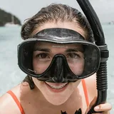
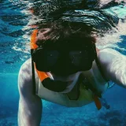
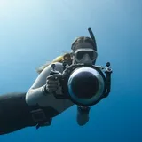
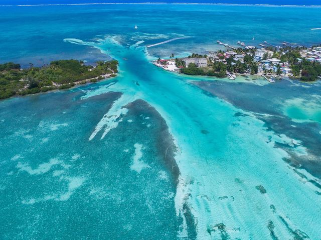
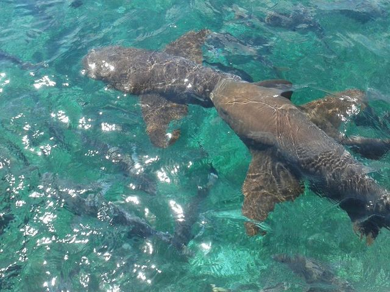
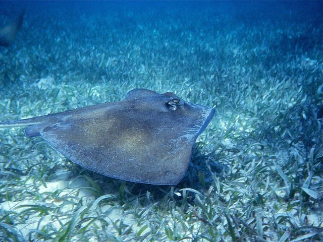
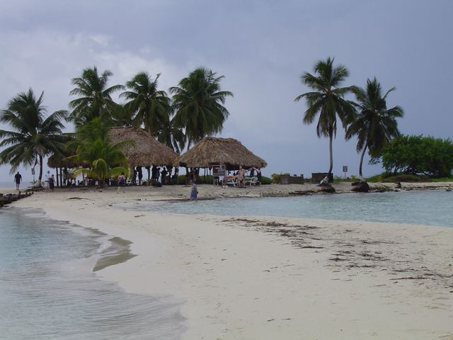
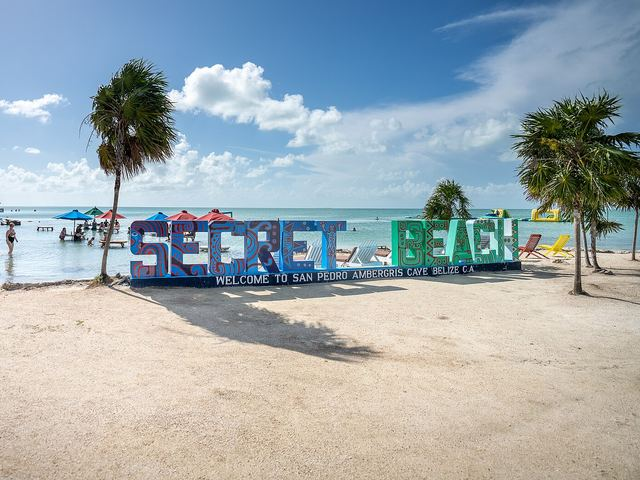
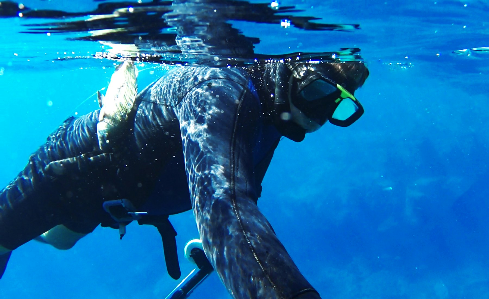
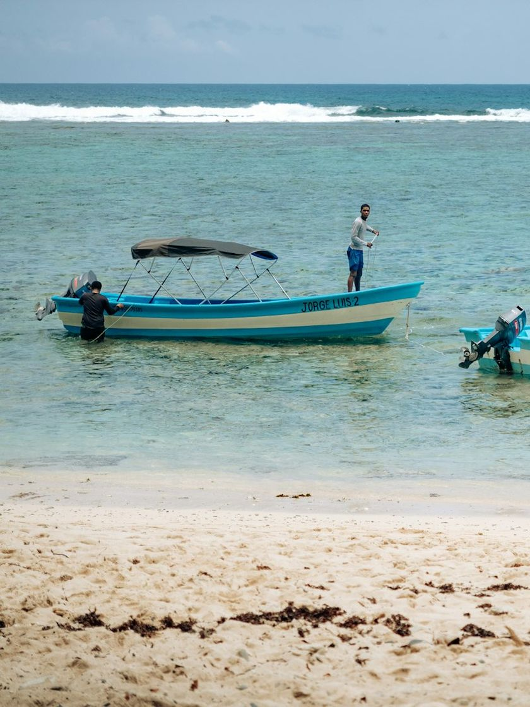

Snorkeling in Caye Caulker
Half day and full day reef trips. Small boats, beautiful marine life and local guides.



5000+Happy Snorkelers
Why snorkel with us
Everything you need for a day on the reef comes with the trip, and every trip stays small.
- 2Father and son run Reef Snorkeling Tours
- 3Snorkel sites on the half day tour
- 4Snorkeling tours to choose from
- 6Hours at Hol Chan Marine Reserve with 4 stops
- Gear included
- Free water
- Free fruits
- Free food
- Park fee included
- Comfortable boat
- Small groups
- Professional guides
- Tarpon and frigatebird feeding
- Night snorkeling with lights
Destinations
Eight places we take guests, from marine reserves to island beaches.
-

Caye Caulker Marine Reserve
Three snorkel sites on the half day tour.
-

Hol Chan Marine Reserve
The main stop on the full day tour, with the Sunken Barge.
-

Shark Ray Alley
Snorkel alongside sharks and stingrays on both snorkel tours.
-

Coral Garden
A coral reef stop on the half day and full day tours.
-

South Channel
Night snorkeling with underwater lights.
-

Goff's Caye
See manatees, snorkel and spend the day on the island.
-

Secret Beach
Shaded boat, rum punch and seasonal ceviche.
-

Miami Beach
Shaded boat with lobster, chicken, fish or vegetarian food.
What we offer
Fishing, spearfishing and charters are on private boats. Fishing and spearfishing take 2 to 6 guests, and charters seat 14 with pickup from Belize or San Pedro.
-

Snorkeling
Half day, full day, night snorkeling and a full day at Goff's Caye, with every stop in order.
- Water
- Fruits
- Snorkeling gear
- Park fee
-

Fishing
Drop fishing inside the reef for snapper. Add food and Swings cooks your catch for free.
- Water
- Fruits
- Fishing gear
- Cooked free, optional
-

Spearfishing
Lobster, conch and fish across three stops. Fresh conch ceviche is included.
- Water
- Fruits
- Full gear
- Conch ceviche
-

Chartered Trips
Secret Beach, Goff's Caye or Miami Beach by shaded boat. Pickup from Belize or San Pedro.
- Rum punch
- Seasonal ceviche
- Food
- Dry storage
Let's snorkel.
Book your tour+501 609353
Caye Caulker, Belize